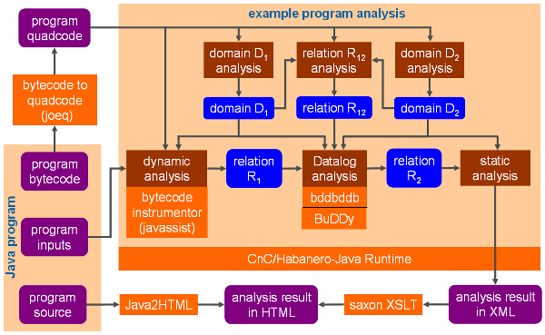

| | Architecture of Chord |
This chapter presents the high-level architecture of Chord, depicted below, and describes its key components.

All inputs to Chord are specified by means of system properties. Chapter * describes how to set properties and the meaning of each property that is recognized by Chord.
The Java program to be analyzed is also specified via properties. Chapter * describes how to setup a Java program for analysis using Chord.
Java Program Representation
Chord analyzes Java bytecode, not Java source code, and thus only requires the program's class files. (Certain analyses, however, present their results at the Java source code level, and thus require the program's Java source files as well.) Chord uses the Joeq Java compiler framework to convert the Java bytecode of the input Java program, one class file at a time, into a three-address-like intermediate program representation called quadcode that is more suitable for analysis. Chapter * describes the quadcode representation in detail.
Analysis Scope Construction
A pre-requisite to analyzing a Java program using any program analysis framework, including Chord, is to compute the analysis scope: which parts of the program to analyze. Chord implements several standard scope construction algorithms from the literature that differ in aspects such as scalability, precision, and usability for the problem at hand. Chapter * describes these algorithms in detail.
Writing and Running Analyses
Chord provides many standard analyses. Chapter * describes these analyses and explains how to run them. Moreover, Chord allows users to write and run their own analyses, possibly atop the provided analyses.
Each analysis in Chord is written modularly, independent of other analyses, along with lightweight annotations specifying the inputs and outputs of the analysis. Chord's runtime automatically computes dependencies between analyses (e.g., determines which analysis produces as output a result that is needed as input by another analysis). Before running a desired analysis, Chord recursively runs other analyses until the inputs to the desired analysis have been computed; it finally runs the desired analysis to produce the outputs of that analysis.
Chord can be invoked in one of two modes: classic or modern. These two modes defer in the semantics of dependencies between analyses. In particular, the classic mode is simpler to understand for novice users (the dependencies are only data dependencies) but has a sequential runtime, whereas the modern mode is harder to understand (there are both data and control dependencies) but has a parallel runtime that is capable of running analyses without dependencies between them in parallel. The parallel runtime is based on Habanero-Java, and the semantics of the dependencies between analyses is based on the Habanero Concurrent Collections (CnC) declarative parallel programming model. Chapter * expands upon the modular architecture of analyses in Chord.
Chord provides various analysis templates: classes containing boilerplate code that can be extended by users to rapidly prototype different kinds of analyses. An example is class RHSAnalysis, named after [Reps, Horowitz, and Sagiv 1995], which can be extended by users to write a summary-based inter-procedural context-sensitive static analysis by merely specifying the abstract domain and intra-procedural transfer functions. Another example is DynamicAnalysis, which can be extended by users to write a dynamic analysis by merely specifying which of various provided events to instrument, and the transfer functions for those events. Chapters * and * describe how users can write and run their own analyses in Chord using the provided analysis templates.
Dynamic Analysis
Chord uses the Javassist Java bytecode manipulation framework for instrumenting bytecode and doing dynamic analysis. Chord offers the most versatile capabilities of any existing dynamic analysis framework for Java, particularly the ability to instrument the entire JDK (including classes in package java.lang). Specifically, it includes support for:
Chapter * describes all aspects of dynamic analysis in Chord.
Datalog Analysis
A common way to rapidly prototype an analysis in Chord is using a declarative logic-programming language called Datalog. Chord uses the BDD-based Datalog solver bddbddb to run analyes written in Datalog. Chapter * describes all aspects of such analyses.
| | Architecture of Chord |